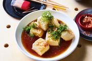
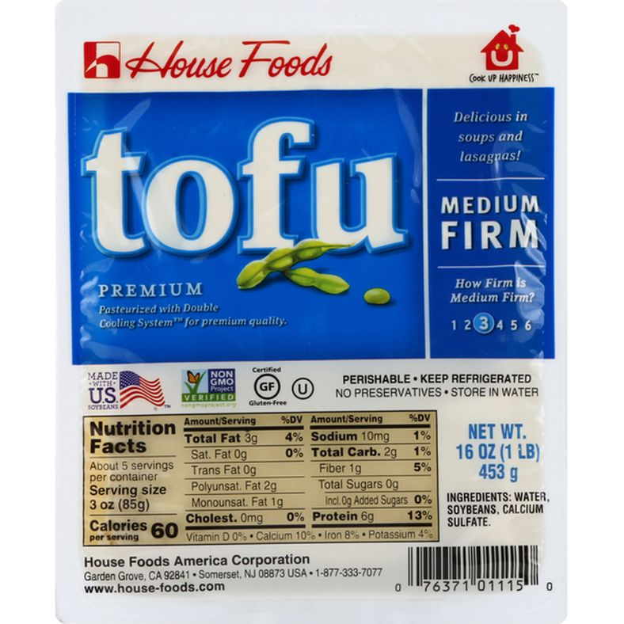
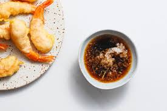

Deep Fried Age Tofu

Recipe Overview:
This is my go to recipe for a quick snack of age tofu at home.
- Prep: 5 Minutes
- Cook: 10 Minutes
- Serves: 1
Ingredients
- 1 14oz package of organic tofu, cut into bite sized blocks
- 3 cups canola or vegetable oil, for frying
- 1 cup corn starch
- 1/4 cup tempura sauce
- 1/2 inch knob of fresh ginger, peeled and grated
- 1 small bunch of spring onion, sliced for garnish

Steps:
- Heat a medium saucepan over medium heat
- Add oil and bring to frying temperature, 300°-350°F
- While the oil gets hot cut your tofu, pat dry with a paper towel and add to a large mixing bowl with cornstarch
- Carefully lower battered tofu into hot oil using a slotted spoon, in batches of 6-8 so that tofu is completely submerged
- Gently fry for 6-7 minutes, stirring occasionally to prevent tofu sticking together
- Remove fried tofu and set aside on a plate lined with paper towels to dry and drain excess oil
- Repeat with remaining tofu until tofu is fried and set out to dry
- While tofu dries, heat a small skillet over low heat
- Add grated ginger and tempura sauce until warm and steamy
- Plate fried age tofu in a bowl and drizzle warm tempura sauce over top, coating each piece completely
- Top with sliced spring onion and enjoy a savory bowl of crunchy age tofu!
Tempura Sauce:

If you wish to go a step further, here is a recipe for savory home-made tempura sauce.
Ingredients:
- 1 tbsp hondashi powder or equivalent bonito soup stock flavoring
- 1 tbsp sugar
- 1/4 cup soy sauce
- 1/4 cup mirin
Steps:
- Bring a small saucepan to temperature over medium-low heat
- Add the soy and mirin
- Simmer for 2-3 minutes to cook off the alcohol from the mirin
- Whisk in the sugar and hondashi powder
- Serve warm or store in an airtight container for later